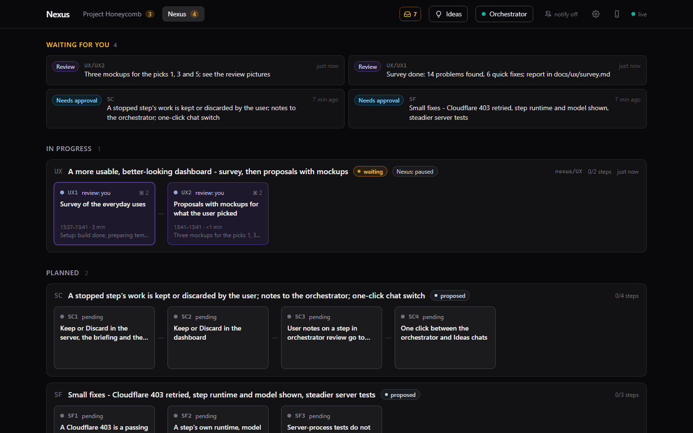
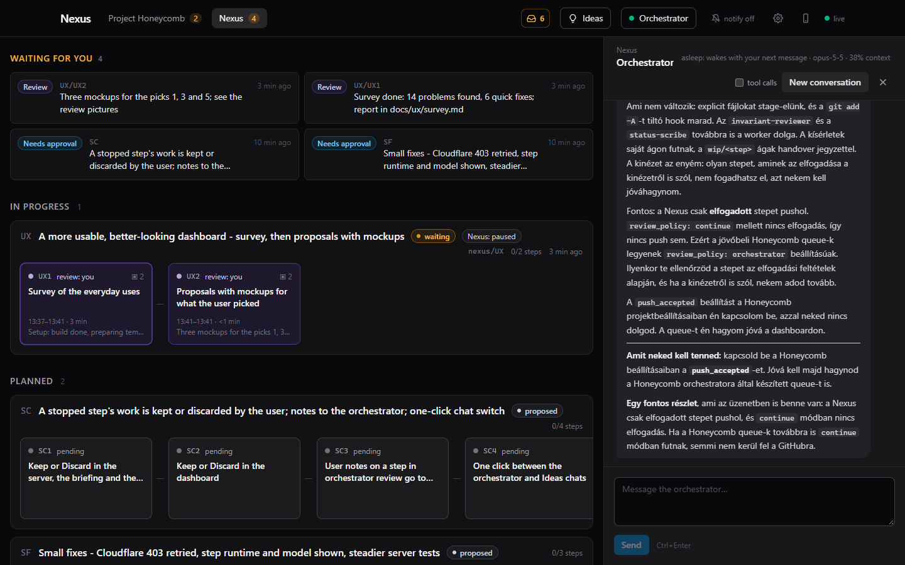
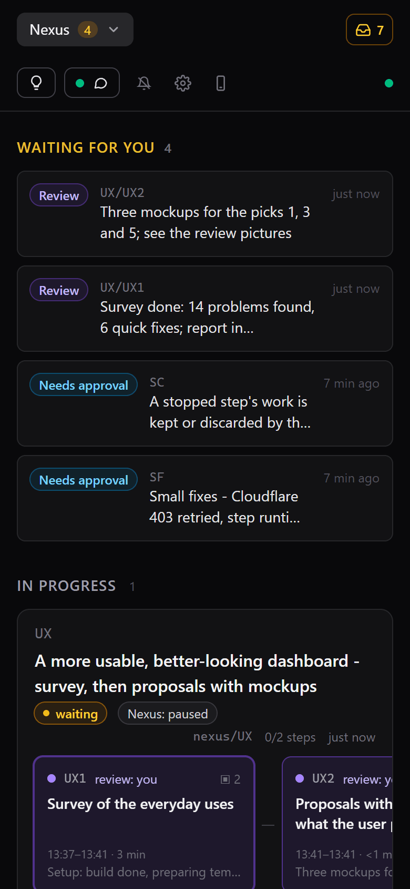

Nexus · queue✕
SC A stopped step's work is kept or discarded by the user
needs your approvalrevision 1 · 4 steps · runs after SF
Steps · what you approve
SC1Keep or Discard in the server, the briefing and the notices
The server works out what a stopped step left: its own commits from git.yaml, and the uncommitted changes, labelled as not necessarily the step's.5 criteria ▾
The server works out what a stopped step left: its own commits from git.yaml, and the uncommitted changes, labelled as not necessarily the step's.5 criteria ▾
SC2Keep or Discard in the dashboard
Continue and the approval of a new revision show what the step left and ask Keep or Discard.4 ▾
Continue and the approval of a new revision show what the step left and ask Keep or Discard.4 ▾
SC3User notes on a step in orchestrator review go to the orchestrator3 ▾
SC4One click between the orchestrator and Ideas chats3 ▾
▸ Description▸ Stop conditions · 5▸ Checks · 3▸ Runs on Claude, high
Nexus · UX · step 2 of 2✕
UX2 Proposals with mockups for what the user picked
waiting for your reviewtook 1 h 10 min · 3 commits
Three mockups for the picks; the chat-first layout is recommended.
Pictures · 62 marked ✓

✓Chat-first, desktop

✓Split view

⇄Header variants

⇄Phone bottom bar
✓ typecheck▸ Goal and acceptance▸ Commits · 3▸ Timeline
Project Honeycomb · W · step W4c✕
The canyon stair along straight walls: smooth it in W4c, or leave it for a later look pass?
question for youthe worker waits · 1 h
Orchestrator: A look matter, so yours. Smoothing now costs about one more round of W4c; leaving it keeps W moving. I recommend: smooth it now, the stair is visible on every canyon sheet.
▸ Why W stopped (W4c, 10:43)▸ Look sheet · 3 pictures